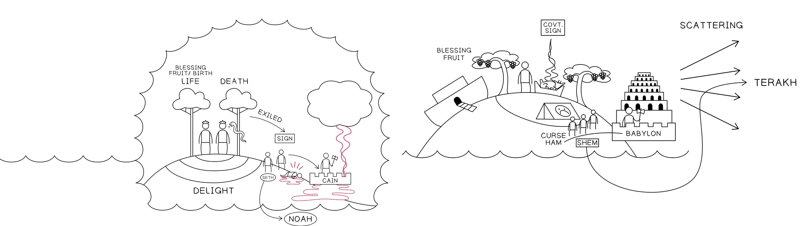

Sessão 3: O Design Literário de Gênesis
1-11 Sessão 3: O Design Literário de Gênesis
1-11
Pontos-ChavePontos-Chave
A história em Gênesis 1-11 nos guia através de um ciclo temático de criação, falhas crescentes,
des-criação e, finalmente, a re-criação de um remanescente que é comissionado como a nova
humanidade. A história em Gênesis 1-11 nos guia através de um ciclo temático de criação, falhas crescentes,
des-criação e, finalmente, a re-criação de um remanescente que é comissionado como a nova
humanidade.
A história de Avraham é projetada com múltiplos movimentos que repetem e desenvolvem este ciclo.
A história de Avraham é projetada com múltiplos movimentos que repetem e desenvolvem este ciclo.
Saber onde você está no ciclo ilumina muitas das características únicas na ordem e no design da
história de Avraham.Saber onde você está no ciclo ilumina muitas das características únicas na ordem e no design da
história de Avraham.
A Melodia Temática do TaNaKA Melodia Temática do TaNaK
A organização literária de A organização literária de Gênesis 1:1-11:26Gênesis 1:1-11:26, tanto em seu design quanto nos temas
principais explorados nas narrativas, forma o modelo organizacional do TaNaK. Para entender
verdadeiramente do que trata todo o TaNaK, precisamos recapitular a história até agora, como é
apresentada em Gênesis 1-11 (adaptado de D.A. Teeter, comunicação pessoal e seu artigo “Biblical
Symmetry and Its Modern Detractors”, apresentado no congresso de 2019 da International Organization
for the Study of the Old Testament). , tanto em seu design quanto nos temas
principais explorados nas narrativas, forma o modelo organizacional do TaNaK. Para entender
verdadeiramente do que trata todo o TaNaK, precisamos recapitular a história até agora, como é
apresentada em Gênesis 1-11 (adaptado de D.A. Teeter, comunicação pessoal e seu artigo “Biblical
Symmetry and Its Modern Detractors”, apresentado no congresso de 2019 da International Organization
for the Study of the Old Testament).
Gênesis 1:1-9:17. Tradução e Design Literário por Tim Mackie
para BibleProject Classroom: Abraão (2021).Gênesis 1:1-9:17. Tradução e Design Literário por Tim Mackie
para BibleProject Classroom: Abraão (2021).
Gênesis 6:1-11:9. Tradução e Design Literário por Tim Mackie
para BibleProject
Classroom: Abraão (2021).Gênesis 6:1-11:9. Tradução e Design Literário por Tim Mackie
para BibleProject
Classroom: Abraão (2021).
Gênesis 11:1-12:5. Tradução e Design Literário por Tim Mackie para
BibleProject Classroom: Abraão (2021).Gênesis 11:1-12:5. Tradução e Design Literário por Tim Mackie para
BibleProject Classroom: Abraão (2021).
Esses ciclos temáticos estabelecem um padrão narrativo e uma melodia
temática que recicla, desenvolve e avança a cada nova geração. A melodia básica é assim:Esses ciclos temáticos estabelecem um padrão narrativo e uma melodia
temática que recicla, desenvolve e avança a cada nova geração. A melodia básica é assim:
1. Criação e Bênção1. Criação e Bênção
Deus traz ordem/vida/bênção a partir do caos/águas/morte/maldição.Deus traz ordem/vida/bênção a partir do caos/águas/morte/maldição.
Palavras-chave: vida, bênção, criar, estabelecer, semente, brotar, crescer, fruto, frutífero e
multiplicar. Também sete, plenitude e juramento.Palavras-chave: vida, bênção, criar, estabelecer, semente, brotar, crescer, fruto, frutífero e
multiplicar. Também sete, plenitude e juramento.
Imagens-chave: terra seca, refúgio, segurança, ordem.Imagens-chave: terra seca, refúgio, segurança, ordem.
2. Insensatez, Teste e Falha (a.k.a. “a queda tola”)2. Insensatez, Teste e Falha (a.k.a. “a queda tola”)
Deus convida um parceiro humano escolhido para compartilhar da ordem/vida/bênção, o que coloca
uma decisão/teste de sua confiabilidade sobre a mesa.Deus convida um parceiro humano escolhido para compartilhar da ordem/vida/bênção, o que coloca
uma decisão/teste de sua confiabilidade sobre a mesa.
O parceiro escolhido por Deus falha/tem sucesso no teste, geralmente envolvendo
engano/divisão/violência.O parceiro escolhido por Deus falha/tem sucesso no teste, geralmente envolvendo
engano/divisão/violência.
A mesma pessoa/próxima geração enfrenta sua própria oportunidade e teste e falha/tem sucesso,
geralmente envolvendo uma expressão intensificada de engano/divisão/violência.A mesma pessoa/próxima geração enfrenta sua própria oportunidade e teste e falha/tem sucesso,
geralmente envolvendo uma expressão intensificada de engano/divisão/violência.
A sequência crescente de testes e falhas leva a uma separação entre os personagens principais,
de modo que uma pessoa ou família se separa do resto e é escolhida por Deus para um novo futuro.
A sequência crescente de testes e falhas leva a uma separação entre os personagens principais,
de modo que uma pessoa ou família se separa do resto e é escolhida por Deus para um novo futuro.
3. Des-criação e Re-criação3. Des-criação e Re-criação
Des-criação: Deus provoca uma inversão do nº 1 acima, geralmente uma escalada de
caos/morte/maldição.Des-criação: Deus provoca uma inversão do nº 1 acima, geralmente uma escalada de
caos/morte/maldição.
A partir dessa des-criação, Deus escolhe/preserva um remanescente/semente e inicia um novo
movimento de re-criação através deles (frequentemente marcado por alianças).A partir dessa des-criação, Deus escolhe/preserva um remanescente/semente e inicia um novo
movimento de re-criação através deles (frequentemente marcado por alianças).
4. Repetição4. Repetição
CriaçãoCriação
A partir das trevas e da desordemA partir das trevas e da desordem
O Teste (também conhecido como "A Queda
Insensata")O Teste (também conhecido como "A Queda
Insensata")
Passar/FalharPassar/Falhar
EnganoEngano
Fazer o que é "bom" aos seus próprios olhosFazer o que é "bom" aos seus próprios olhos
DivisãoDivisão
Passar/FalharPassar/Falhar
EnganoEngano
Fazer o que é "bom" aos seus próprios olhosFazer o que é "bom" aos seus próprios olhos
DivisãoDivisão
Passar/FalharPassar/Falhar
EnganoEngano
Fazer o que é "bom" aos seus próprios olhosFazer o que é "bom" aos seus próprios olhos
DivisãoDivisão
Des-criação e Re-criaçãoDes-criação e Re-criação
Desordem / morte / maldiçãoDesordem / morte / maldição
Resgate do remanescenteResgate do remanescente
Padrões de 3+1 / 7 / 10Padrões de 3+1 / 7 / 10
Nova ordem / vida / bênção através da aliançaNova ordem / vida / bênção através da aliança
Gênesis 1:1-11:26. Tradução e Design Literário por Tim Mackie para
BibleProject Classroom: Abraão (2021).Gênesis 1:1-11:26. Tradução e Design Literário por Tim Mackie para
BibleProject Classroom: Abraão (2021).
As histórias de Avraham são organizadas de acordo
com essa
mesma melodia temática, à medida que o ciclo se repete nos níveis macro, médio e micro de cada parte da
história.As histórias de Avraham são organizadas de acordo
com essa
mesma melodia temática, à medida que o ciclo se repete nos níveis macro, médio e micro de cada parte da
história.
Questão para ReflexãoQuestão para Reflexão

Reflection Question
Como os autores bíblicos ligam a história de Avraham ao ciclo de temas em
Gênesis 1-11?Como os autores bíblicos ligam a história de Avraham ao ciclo de temas em
Gênesis 1-11?